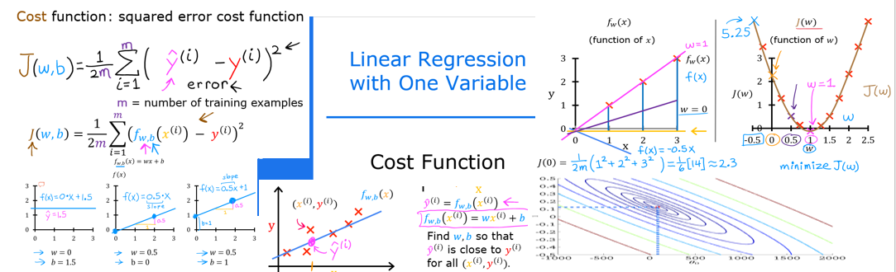
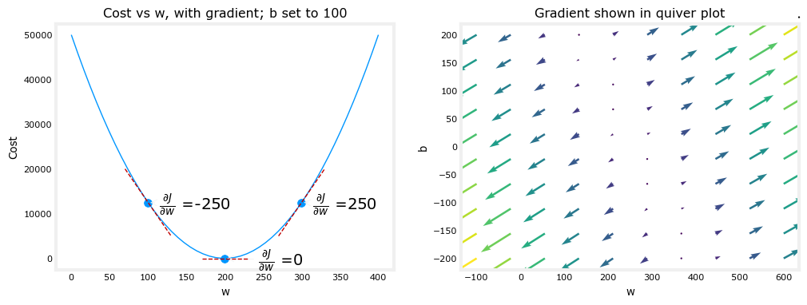

资源
- 视频: (强推|双字)2022 吴恩达机器学习 Deeplearning.ai 课程_哔哩哔哩_bilibili
- 视频: 吴恩达机器学习 - 网易云课堂 (163.com)
- 课件: kaieye/2022-Machine-Learning-Specialization (github.com)
- 笔记: fengdu78/Coursera-ML-AndrewNg-Notes: 吴恩达老师的机器学习课程个人笔记 (github.com)
- 官网: 机器学习 | Coursera
Week1
Optional Lab: Brief Introduction to Python and Jupyter Notebooks
可选实验：对 Python 与 Jupyter Notebooks 作简短的介绍。
Welcome to the first optional lab!
欢迎来到第一次可选实验！
Optional labs are available to:
可选实验的用处：
-
provide information - like this notebook
- 提供信息——像这个笔记本
-
reinforce lecture material with hands-on examples
- 对上手实例提供更好的课程工具
-
provide working examples of routines used in the graded labs
- 提供作业实例用于各个实验
Goals
目标
In this lab, you will:
在这次实验中，你将：
-
Get a brief introduction to Jupyter notebooks
- 获得对 Jupyter notebooks 的简短介绍
-
Take a tour of Jupyter notebooks
- 体验一次 Jupyter notebooks
-
Learn the difference between markdown cells and code cells
- 了解到 markdown cells 与 code cells 的区别
-
Practice some basic python
- 练习一些基础 Python 知识
The easiest way to become familiar with Jupyter notebooks is to take the tour available above in the Help menu:
熟悉 Jupyter notebooks 最简单的方法就是点击 Help 菜单栏中的 User Interface Tour（用户导览）选项

Jupyter notebooks have two types of cells that are used in this course. Cells such as this which contain documentation called Markdown Cells. The name is derived from the simple formatting language used in the cells. You will not be required to produce markdown cells. Its useful to understand the cell pulldown shown in graphic below. Occasionally, a cell will end up in the wrong mode and you may need to restore it to the right state:
在这个资源中，使用到了 Jupyter notebooks 的两种类型的片段。包含文档信息的片段被称之为 Markdown Cells。这个片段命名来自于其使用的简洁格式语言。你并不被要求创建 markdown cells。但这对你理解下面的cell pulldown 很有帮助。有时，单元格会以错误的模式结束，您可能需要将其恢复到正确的状态：

The other type of cell is the code cell where you will write your code:
另一种类型的片段被称之为 code cell，你可以在这里撰写你的代码：
1 | |
This is code cell
Python
You can write your code in the code cells.
你可以在 code cells 中撰写你的代码，
To run the code, select the cell and either
要想运行代码，选择这个片段并：
- hold the shift-key down and hit ‘enter’ or ‘return’
- 按下 Shift+Enter（或 Return）键
- click the ‘run’ arrow above
- 点击 run 按钮

Print statement
输出结果
Print statements will generally use the python f-string style.
输出结果默认使用 python 的 f-string 风格
Try creating your own print in the following cell.
尝试在下面这个片段创建你自己的输出。
Try both methods of running the cell.
尝试两种方法运行这个片段。
1 | |
f strings allow you to embed variables right in the strings!
Congratulations!
恭喜！
You now know how to find your way around a Jupyter Notebook.
你知道了怎么使用 Jupyter Notebook。
Optional Lab: Model Representation

Goals
In this lab you will: 在这次实验中你将:
- Learn to implement the model for linear regression with one variable 学习实现单变量线性回归
Notation
Here is a summary of some of the notation you will encounter.
以下是您将遇到的一些符号的摘要.
| General Notation 一般表示法 |
Description 描述 |
Python (if applicable 如果适用) |
|---|---|---|
| scalar, non bold 标量,非粗体 | ||
| vector, bold 向量,粗体 | ||
| Regression 回归 | ||
| Training Example feature values (in this lab - Size (1000sqft)) 训练示例特征值（在本练习中 - 大小（1000 平方英尺）） | x_train |
|
| Training Example targets (in this lab Price (1000s of dollars)). 训练示例目标（在本练习中为价格（1000 美元））。 | y_train |
|
| , | Training Example 训练示例 | x_i, y_i |
| m | Number of training examples 训练示例数量 | m |
| parameter: weight, 参数:斜率 | w |
|
| parameter: bias 参数:截距 | b |
|
| The result of the model evaluation at parameterized by : | f_wb |
Tools
In this lab you will make use of:
- NumPy, a popular library for scientific computing
- Matplotlib, a popular library for plotting data
1 | |
Problem Statement
As in the lecture, you will use the motivating example of housing price prediction.
This lab will use a simple data set with only two data points - a house with 1000square feet(sqft) sold for $300,000 and a house with 2000square feet sold for $500,000. These two points will constitute our data or training set. In this lab, the units of size are 1000sqft and the units of price are 1000s of dollars.
与课堂一样，您将使用房价预测的激励性示例。 本实验将使用一个只有两个数据点的简单数据集 - 一个以$300，000 出售的 1000 平方英尺的房子和一个以$500，000 出售的 2000 平方英尺的房子。这两点将构成我们的数据或训练集。在这个实验室中，大小单位是 1000 平方英尺，价格单位是 1000 美元。
| Size (1000sqft) | Price (1000s of dollars) |
|---|---|
| 1.0 | 300 |
| 2.0 | 500 |
You would like to fit a linear regression model (shown above as the blue straight line) through these two points, so you can then predict price for other houses - say, a house with 1200sqft.
您希望通过这两个点拟合线性回归模型（如上图所示为蓝色直线），以便您可以预测其他房屋的价格 - 例如，1200 平方英尺的房屋。
Please run the following code cell to create your x_train and y_train variables. The data is stored in one-dimensional NumPy arrays.
请运行以下代码单元以创建“x_train”和“y_train”变量。数据存储在一维 NumPy 数组中。
1 | |
x_train = [1. 2.]
y_train = [300. 500.]
Note: The course will frequently utilize the python ‘f-string’ output formatting described here when printing. The content between the curly braces is evaluated when producing the output.
注意：本课程在打印时将经常使用此处描述的 python“f-string”输出格式。生成输出时，将计算大括号之间的内容。
Number of training examples m
You will use m to denote the number of training examples. Numpy arrays have a .shape parameter. x_train.shape returns a python tuple with an entry for each dimension. x_train.shape[0] is the length of the array and number of examples as shown below.
您将使用 m 表示训练示例的数量。枚举数组具有 a.shape 参数。x_train.shape 返回一个 python 元组，其中包含每个维度的条目。x_train.shape[0] 是数组的长度和示例的数量，如下所示。
1 | |
x_train.shape: (2,)
Number of training examples is: 2
One can also use the Python len() function as shown below.
也可以使用 Python len（）函数，如下所示。
1 | |
Number of training examples is: 2
Training example x_i, y_i
You will use (x, y) to denote the training example. Since Python is zero indexed, (x, y) is (1.0, 300.0) and (x, y) is (2.0, 500.0).
To access a value in a Numpy array, one indexes the array with the desired offset. For example the syntax to access location zero of x_train is x_train[0].
Run the next code block below to get the training example.
您将使用 (x, y) 来表示第 i 个训练示例。由于 Python 的索引为零，因此 (x, y) 是 (1.0, 300.0) 和 (x, y) 是 (2.0, 500.0)。
要访问 Numpy 数组中的值，请使用所需的偏移量对数组编制索引。例如，访问x_train的位置零的语法是x_train[0]。运行下面的下一个代码块以获取第 i 个训练示例。
1 | |
(x^(0), y^(0)) = (1.0, 300.0)
1 | |
(x^(1), y^(1)) = (2.0, 500.0)
Plotting the data 绘制数据
You can plot these two points using the scatter() function in the matplotlib library, as shown in the cell below.
- The function arguments
markerandcshow the points as red crosses (the default is blue dots).
You can use other functions in the matplotlib library to set the title and labels to display
您可以使用 matplotlib 库中的 scatter() 函数绘制这两个点，如下面的单元格所示。
- 函数参数
mark和c将点显示为红十字（默认值为蓝点）。
您可以使用 matplotlib 库中的其他函数来设置要显示的标题和标签
1 | |
Model function 模型函数

As described in lecture, the model function for linear regression (which is a function that maps from x to y) is represented as
如讲座中所述，线性回归的模型函数（从 x 映射到 y 的函数）表示为
The formula above is how you can represent straight lines - different values of and give you different straight lines on the plot.
上面的公式决定如何表示直线 - 不同的 和 值在图上显示不同的直线。
Let’s try to get a better intuition for this through the code blocks below. Let’s start with and .
让我们尝试通过下面的代码块获得更好的直觉。让我们从 w=100 和 b=100 开始。
Note: You can come back to this cell to adjust the model’s w and b parameters
注意：您可以返回此单元格以调整模型的 w 和 b 参数
1 | |
w: 100
b: 100
Now, let’s compute the value of for your two data points. You can explicitly write this out for each data point as -
现在，让我们计算两个数据点的 值。您可以为每个数据点显式地将其写出为 -
for , f_wb = w * x[0] + b
for , f_wb = w * x[1] + b
For a large number of data points, this can get unwieldy and repetitive. So instead, you can calculate the function output in a for loop as shown in the compute_model_output function below.
对于大量数据点，这可能会变得笨拙和重复。因此，您可以计算 for 循环中的函数输出，如下面的 compute_model_output 函数所示。
Note: The argument description
(ndarray (m,))describes a Numpy n-dimensional array of shape (m,).(scalar)describes an argument without dimensions, just a magnitude.
注意：参数描述(ndarray (m,))描述了形状 (m,) 的 Numpy n 维数组。(scalar)描述一个没有维度的参数，只是一个量级。
Note:np.zero(n)will return a one-dimensional numpy array with entries
注意：np.zero(n)将返回一个包含 个条目的一维 numpy 数组
1 | |
Now let’s call the compute_model_output function and plot the output.
现在，让我们调用 compute_model_output 函数并绘制输出。
1 | |
As you can see, setting and does not result in a line that fits our data.
如您所见，设置 和 不会生成适合我们数据的线。
Challenge 挑战
Try experimenting with different values of and . What should the values be for a line that fits our data?
尝试使用 和 的不同值。适合我们数据的线的值应该是多少？
Tip:
You can use your mouse to click on the triangle to the left of the green “Hints” below to reveal some hints for choosing b and w.
您可以使用鼠标单击下面绿色“提示”左侧的三角形，以显示选择 b 和 w 的一些提示。
Hints
- Try $w = 200$ and $b = 100$
Prediction
Now that we have a model, we can use it to make our original prediction. Let’s predict the price of a house with 1200sqft. Since the units of are in 1000’s of sqft, is 1.2.
现在我们有了一个模型，我们可以用它来做出我们的原始预测。让我们预测 1200 平方英尺的房子的价格。由于 的单位是 1000 的平方英尺，因此 是 1.2。
1 | |
$340 thousand dollars
Congratulations!
In this lab you have learned:
- Linear regression builds a model which establishes a relationship between features and targets
- In the example above, the feature was house size and the target was house price
- for simple linear regression, the model has two parameters and whose values are ‘fit’ using training data.
- once a model’s parameters have been determined, the model can be used to make predictions on novel data.
在本实验中，您了解了：
- 线性回归构建一个模型，该模型在特征和目标之间建立关系
- 在上面的示例中，特征是房屋大小，目标是房价
- 对于简单的线性回归，模型有两个参数和，其值使用训练数据“拟合”。
- 一旦确定了模型的参数，该模型就可用于对新数据进行预测。
Optional Lab: Cost Function

Goals
In this lab you will:
- you will implement and explore the
costfunction for linear regression with one variable.
在本次实验中,您将:
- 您将实现并探索具有一个变量的线性回归的
成本函数。
Tools
In this lab we will make use of:
- NumPy, a popular library for scientific computing
- Matplotlib, a popular library for plotting data
- local plotting routines in the lab_utils_uni.py file in the local directory
在本实验中，我们将利用：
- NumPy，一个流行的科学计算库
- Matplotlib，用于绘制数据的流行库
- 本地目录中 lab_utils_uni.py 文件中的本地绘图例程
1 | |
Problem Statement
You would like a model which can predict housing prices given the size of the house.
Let’s use the same two data points as before the previous lab- a house with 1000square feet sold for $300,000 and a house with 2000square feet sold for $500,000.
您需要一个模型，该模型可以根据房屋的大小预测房价。 让我们使用与上一个实验室之前相同的两个数据点 - 一个以$300,000 出售的 1000 平方英尺的房子和以$500,000 出售的 2000 平方英尺的房屋。
| Size (1000sqft) | Price (1000s of dollars) |
|---|---|
| 1 | 300 |
| 2 | 500 |
1 | |
Computing Cost
The term ‘cost’ in this assignment might be a little confusing since the data is housing cost. Here, cost is a measure how well our model is predicting the target price of the house. The term ‘price’ is used for housing data.
此分配中的术语“成本”可能有点令人困惑，因为数据是住房成本。在这里，成本是衡量我们的模型预测房屋目标价格的能力。术语“价格”用于住房数据。
The equation for cost with one variable is:
J(w,b) = \frac{1}{2m} \sum\limits_{i = 0}^{m-1} (f_{w,b}(x^{(i)}) - y^{(i)})^2 \tag{1}where
f_{w,b}(x^{(i)}) = wx^{(i)} + b \tag{2}- is our prediction for example using parameters .
- 是我们的预测，例如使用参数 w，b 。
- is the squared difference between the target value and the prediction.
- 是目标值和预测值之间的平方差
- These differences are summed over all the examples and divided by
2mto produce the cost, .- 这些差异在所有示例中相加，然后除以
2m以产生成本, .
- 这些差异在所有示例中相加，然后除以
Note, in lecture summation ranges are typically from 1 to m, while code will be from 0 to m-1.
请注意，在课程中，求和范围通常为 1 到 m，而代码的范围是从 0 到 m-1。
The code below calculates cost by looping over each example. In each loop:
f_wb, a prediction is calculated- the difference between the target and the prediction is calculated and squared.
- this is added to the total cost.
下面的代码通过循环遍历每个示例来计算成本。在每个循环中：
f_wb，计算预测- 计算目标和预测之间的差值并平方。
- 这被添加到总成本中。
1 | |
Cost Function Intuition
Your goal is to find a model , with parameters , which will accurately predict house values given an input . The cost is a measure of how accurate the model is on the training data.
The cost equation (1) above shows that if and can be selected such that the predictions match the target data , the $(f_{w,b}(x^{(i)}) - y{(i)})2 $ term will be zero and the cost minimized. In this simple two point example, you can achieve this!
In the previous lab, you determined that provided an optimal solution so let’s set to 100 and focus on .
Below, use the slider control to select the value of $w$ that minimizes cost. It can take a few seconds for the plot to update.
您的目标是找到一个模型，，参数w，b，这将在给定输入的情况下准确预测房屋价值。成本是模型在训练数据上的准确程度的度量。
上面的成本等式（1）表明，如果可以选择 和 ，使得预测 与目标数据 匹配，则 $(f_{w,b}(x^{(i)}) - y{(i)})2 $ 项将为零，并且成本最小化。在这个简单的两点示例中，您可以实现此目的！
在之前的实验中，您确定 提供了最佳解决方案，因此让我们将 设置为 100，并专注于 。
下面，使用滑块控件选择$w$ 的值，以最大限度地降低成本。可能需要几秒钟才能更新绘图。
啥也出不来 orz
1 | |
interactive(children=(IntSlider(value=150, description='w', max=400, step=10), Output()), _dom_classes=('widge…
The plot contains a few points that are worth mentioning.
- cost is minimized when , which matches results from the previous lab
- Because the difference between the target and pediction is squared in the cost equation, the cost increases rapidly when is either too large or too small.
- Using the
wandbselected by minimizing cost results in a line which is a perfect fit to the data.
该图包含了几个值得一提的要点。
- 当 时，成本最小化，这与上一个实验室的结果相匹配
- 由于目标和国家之间的差异在成本等式中是平方的，因此当 美元太大或太小时，成本会迅速增加。
- 使用通过最小化成本选择的
w和b，可以生成一条与数据完美匹配的线。
Cost Function Visualization- 3D
You can see how cost varies with respect to both w and b by plotting in 3D or using a contour plot.
It is worth noting that some of the plotting in this course can become quite involved. The plotting routines are provided and while it can be instructive to read through the code to become familiar with the methods, it is not needed to complete the course successfully. The routines are in lab_utils_uni.py in the local directory.
您可以通过以 3D 方式绘制或使用等高线图来了解成本相对于 两者 w和 b 的变化。
值得注意的是，本课程中的一些情节可能会变得非常复杂。提供了绘图例程，虽然通读代码以熟悉方法可能很有启发性，但成功完成课程并不需要。这些例程位于本地目录的 lab_utils_uni.py 中。
Larger Data Set
It’s use instructive to view a scenario with a few more data points. This data set includes data points that do not fall on the same line. What does that mean for the cost equation? Can we find , and that will give us a cost of 0?
使用具有更多数据点来查看方案具有指导意义。此数据集包括不在同一行上的数据点。这对成本等式意味着什么？我们能找到，，这将使我们的成本为 0 吗？
1 | |
In the contour plot, click on a point to select w and b to achieve the lowest cost. Use the contours to guide your selections. Note, it can take a few seconds to update the graph.
在等值线图中，单击一个点以选择w和b以实现最低成本。使用等值线来指导您的选择。请注意，更新图表可能需要几秒钟。
1 | |
Above, note the dashed lines in the left plot. These represent the portion of the cost contributed by each example in your training set. In this case, values of approximately and provide low cost. Note that, because our training examples are not on a line, the minimum cost is not zero.
在上面，请注意左侧图中的虚线。这些表示训练集中每个示例所贡献的成本部分。在这种情况下，大约和提供了低成本。请注意，由于我们的训练示例不在一条线上，因此最低成本不为零。
Convex Cost surface
The fact that the cost function squares the loss ensures that the ‘error surface’ is convex like a soup bowl. It will always have a minimum that can be reached by following the gradient in all dimensions. In the previous plot, because the and dimensions scale differently, this is not easy to recognize. The following plot, where and are symmetric, was shown in lecture:
成本函数对损失进行平方的事实确保了“误差表面”像汤碗一样凸起。它将始终具有可以通过遵循所有维度的梯度来达到的最小值。在前面的图中，由于和的尺寸比例不同，所以不容易识别。以下图，其中和是对称的，在课程中显示：
1 | |
Congratulations!
You have learned the following:
- The cost equation provides a measure of how well your predictions match your training data.
- Minimizing the cost can provide optimal values of , .
您已经了解了以下内容：
- 成本等式用于衡量您的预测与训练数据匹配的程度。
- 最小化成本可以提供，的最佳值。
Optional Lab: Gradient Descent for Linear Regression

Goals
In this lab, you will:
- automate the process of optimizing and using gradient descent.
- 使用梯度下降自动执行优化 和 的过程。
Tools
In this lab, we will make use of:
- NumPy, a popular library for scientific computing
- Matplotlib, a popular library for plotting data
- plotting routines in the lab_utils.py file in the local directory
1 | |
1 | |
'ls' 不是内部或外部命令，也不是可运行的程序
或批处理文件。
Problem Statement
Let’s use the same two data points as before - a house with 1000square feet sold for $300,000 and a house with 2000square feet sold for $500,000.
| Size (1000sqft) | Price (1000s of dollars) |
|---|---|
| 1 | 300 |
| 2 | 500 |
1 | |
Compute_Cost
This was developed in the last lab. We’ll need it again here.
这是在上一个实验中撰写的。我们在这里再次需要它。
1 | |
Gradient descent summary
So far in this course, you have developed a linear model that predicts :
到目前为止，在本课程中，您已经开发了一个线性模型来预测 :
f_{w,b}(x^{(i)}) = wx^{(i)} + b \tag{1}In linear regression, you utilize input training data to fit the parameters , by minimizing a measure of the error between our predictions and the actual data . The measure is called the , . In training you measure the cost over all of our training samples
在线性回归中，您利用输入训练数据来拟合参数 , ， 通过最小化我们的预测 与实际数据 之间的误差度量。该度量称为 , 。在训练中，您可以测量我们所有训练样本 的
J(w,b) = \frac{1}{2m} \sum\limits_{i = 0}^{m-1} (f_{w,b}(x^{(i)}) - y^{(i)})^2\tag{2}In lecture, gradient descent was described as:
在课程中，梯度下降被描述为：
\begin{align*} \text{repeat}&\text{ until convergence:} \; \lbrace \newline \; w &= w - \alpha \frac{\partial J(w,b)}{\partial w} \tag{3} \; \newline b &= b - \alpha \frac{\partial J(w,b)}{\partial b} \newline \rbrace \end{align*}where, parameters , are updated simultaneously.
其中，参数 w、b 同时更新。
The gradient is defined as:
梯度定义为:
\begin{align} \frac{\partial J(w,b)}{\partial w} &= \frac{1}{m} \sum\limits_{i = 0}^{m-1} (f_{w,b}(x^{(i)}) - y^{(i)})x^{(i)} \tag{4}\\ \frac{\partial J(w,b)}{\partial b} &= \frac{1}{m} \sum\limits_{i = 0}^{m-1} (f_{w,b}(x^{(i)}) - y^{(i)}) \tag{5}\\ \end{align}Here simultaniously means that you calculate the partial derivatives for all the parameters before updating any of the parameters.
此处 同时 表示在更新任何参数之前计算所有参数的偏导数。
Implement Gradient Descent 实现梯度下降
You will implement gradient descent algorithm for one feature. You will need three functions.
您将为一个要素实现梯度下降算法。您将需要三个函数。
compute_gradientimplementing equation (4) and (5) above- 实现上述等式（4）和（5）
compute_costimplementing equation (2) above (code from previous lab)- 实现上面的等式（2）（上一个实验的代码）
gradient_descent, utilizing compute_gradient and compute_cost- 利用 compute_gradient 和 compute_cost
Conventions: 规定:
- The naming of python variables containing partial derivatives follows this pattern, will be
dj_db.- 包含偏导数的 python 变量的命名遵循此模式, 将 记作
dj_db。
- 包含偏导数的 python 变量的命名遵循此模式, 将 记作
- w.r.t is With Respect To, as in partial derivative of With Respect To .
- w.r.t 是关于，如 J（wb） 相对于 的偏导数。
compute_gradient
compute_gradient implements (4) and (5) above and returns ,. The embedded comments describe the operations.
compute_gradient 实现 (4) 和 (5) 并返回 ,。嵌入的注释描述操作。
1 | |

The lectures described how gradient descent utilizes the partial derivative of the cost with respect to a parameter at a point to update that parameter.
Let’s use our compute_gradient function to find and plot some partial derivatives of our cost function relative to one of the parameters, .
课程描述了梯度下降如何利用成本相对于某个点的参数的偏导数来更新该参数。
让我们使用compute_gradient函数来查找并绘制成本函数相对于其中一个参数 的一些偏导数。
1 | |

Above, the left plot shows or the slope of the cost curve relative to at three points. On the right side of the plot, the derivative is positive, while on the left it is negative. Due to the ‘bowl shape’, the derivatives will always lead gradient descent toward the bottom where the gradient is zero.
上图显示了 或成本曲线相对于 的斜率在三个点。在图的右侧，导数为正，而在左侧为负。由于“碗形”，衍生物将始终导致梯度下降到梯度为零的底部。
The left plot has fixed . Gradient descent will utilize both and to update parameters. The ‘quiver plot’ on the right provides a means of viewing the gradient of both parameters. The arrow sizes reflect the magnitude of the gradient at that point. The direction and slope of the arrow reflects the ratio of and at that point. Note that the gradient points away from the minimum. Review equation (3) above. The scaled gradient is subtracted from the current value of or . This moves the parameter in a direction that will reduce cost.
左边的图固定 。梯度下降将利用 和 来更新参数。右侧的“箭袋图”提供了一种查看两个参数梯度的方法。箭头大小反映了该点处渐变的大小。箭头的方向和斜率反映了该点 和 的比率。请注意，渐变点远离最小值。查看上面的等式(3)。缩放的梯度从 或 的当前值中减去。这会将参数沿降低成本的方向移动。
Gradient Descent 梯度下降
Now that gradients can be computed, gradient descent, described in equation (3) above can be implemented below in gradient_descent. The details of the implementation are described in the comments. Below, you will utilize this function to find optimal values of and on the training data.
现在可以计算梯度，上面等式(3)中描述的梯度下降可以在下面的gradient_descent中实现。注释中描述了实现的详细信息。下面，您将利用此函数在训练数据上找到 和 的最佳值。
1 | |
1 | |
Iteration 0: Cost 7.93e+04 dj_dw: -6.500e+02, dj_db: -4.000e+02 w: 6.500e+00, b: 4.00000e+00
Iteration 1000: Cost 3.41e+00 dj_dw: -3.712e-01, dj_db: 6.007e-01 w: 1.949e+02, b: 1.08228e+02
Iteration 2000: Cost 7.93e-01 dj_dw: -1.789e-01, dj_db: 2.895e-01 w: 1.975e+02, b: 1.03966e+02
Iteration 3000: Cost 1.84e-01 dj_dw: -8.625e-02, dj_db: 1.396e-01 w: 1.988e+02, b: 1.01912e+02
Iteration 4000: Cost 4.28e-02 dj_dw: -4.158e-02, dj_db: 6.727e-02 w: 1.994e+02, b: 1.00922e+02
Iteration 5000: Cost 9.95e-03 dj_dw: -2.004e-02, dj_db: 3.243e-02 w: 1.997e+02, b: 1.00444e+02
Iteration 6000: Cost 2.31e-03 dj_dw: -9.660e-03, dj_db: 1.563e-02 w: 1.999e+02, b: 1.00214e+02
Iteration 7000: Cost 5.37e-04 dj_dw: -4.657e-03, dj_db: 7.535e-03 w: 1.999e+02, b: 1.00103e+02
Iteration 8000: Cost 1.25e-04 dj_dw: -2.245e-03, dj_db: 3.632e-03 w: 2.000e+02, b: 1.00050e+02
Iteration 9000: Cost 2.90e-05 dj_dw: -1.082e-03, dj_db: 1.751e-03 w: 2.000e+02, b: 1.00024e+02
(w,b) found by gradient descent: (199.9929,100.0116)
 Take a moment and note some characteristics of the gradient descent process printed above.
Take a moment and note some characteristics of the gradient descent process printed above.
花点时间注意上面打印的渐变下降过程的一些特征。
- The cost starts large and rapidly declines as described in the slide from the lecture.
- 成本从大处开始并迅速下降，如课程幻灯片中所述。
- The partial derivatives,
dj_dw, anddj_dbalso get smaller, rapidly at first and then more slowly. As shown in the diagram from the lecture, as the process nears the ‘bottom of the bowl’ progress is slower due to the smaller value of the derivative at that point.- 偏导数、
dj_dw和dj_db也会变小，一开始很快，然后变慢。如讲座中的图表所示，由于该过程接近“碗的底部”，由于该点的导数值较小，因此进度较慢。
- 偏导数、
- progress slows though the learning rate, alpha, remains fixed
- 进度缓慢，但学习速率（alpha）保持不变
Cost versus iterations of gradient descent 梯度下降的成本 VS 迭代
A plot of cost versus iterations is a useful measure of progress in gradient descent. Cost should always decrease in successful runs. The change in cost is so rapid initially, it is useful to plot the initial decent on a different scale than the final descent. In the plots below, note the scale of cost on the axes and the iteration step.
成本与迭代图是梯度下降进度的有用度量。在成功运行时，成本应始终降低。成本的变化最初是如此之快，因此在与最终下降不同的尺度上绘制初始体面是有用的。在下面的图中，请注意轴上的成本比例和迭代步骤。
1 | |

Predictions 预测
Now that you have discovered the optimal values for the parameters and , you can now use the model to predict housing values based on our learned parameters. As expected, the predicted values are nearly the same as the training values for the same housing. Further, the value not in the prediction is in line with the expected value.
现在，您已经发现了参数 和 的最优值，现在可以使用该模型根据我们学习的参数预测住房值。正如预期的那样，预测值几乎与同一住房的训练值相同。此外，预测中没有的值与预期值一致。
1 | |
1000sqft house prediction 300.0 Thousand dollars
1200sqft house prediction 340.0 Thousand dollars
2000sqft house prediction 500.0 Thousand dollars
Plotting
You can show the progress of gradient descent during its execution by plotting the cost over iterations on a contour plot of the cost(w,b).
您可以通过在成本的等值线图（w，b）上绘制迭代成本来显示梯度下降的执行过程中的进度。
1 | |
Above, the contour plot shows the over a range of and . Cost levels are represented by the rings. Overlayed, using red arrows, is the path of gradient descent. Here are some things to note:
- The path makes steady (monotonic) progress toward its goal.
- initial steps are much larger than the steps near the goal.
上图显示了 和 范围内的 。成本水平由环表示。使用红色箭头叠加是渐变下降的路径。以下是一些需要注意的事项：
- 这条道路朝着其目标稳步（单调）前进。
- 初始步骤比目标附近的步骤大得多。
Zooming in, we can see that final steps of gradient descent. Note the distance between steps shrinks as the gradient approaches zero.
放大，我们可以看到梯度下降的最后一步。请注意，当梯度接近零时，步长之间的距离会缩小。
1 | |
Increased Learning Rate

In the lecture, there was a discussion related to the proper value of the learning rate, in equation(3). The larger is, the faster gradient descent will converge to a solution. But, if it is too large, gradient descent will diverge. Above you have an example of a solution which converges nicely.
Let’s try increasing the value of and see what happens:
在讲座中，有一个关于学习速率的适当值的讨论，等式 (3)。越大，梯度下降的速度就越快，就会收敛到一个解决方案。但是，如果它太大，梯度下降将发散。上面你有一个解决方案的例子，它很好地收敛了。 让我们尝试增加 的值，看看会发生什么：
1 | |
Iteration 0: Cost 2.58e+05 dj_dw: -6.500e+02, dj_db: -4.000e+02 w: 5.200e+02, b: 3.20000e+02
Iteration 1: Cost 7.82e+05 dj_dw: 1.130e+03, dj_db: 7.000e+02 w: -3.840e+02, b:-2.40000e+02
Iteration 2: Cost 2.37e+06 dj_dw: -1.970e+03, dj_db: -1.216e+03 w: 1.192e+03, b: 7.32800e+02
Iteration 3: Cost 7.19e+06 dj_dw: 3.429e+03, dj_db: 2.121e+03 w: -1.551e+03, b:-9.63840e+02
Iteration 4: Cost 2.18e+07 dj_dw: -5.974e+03, dj_db: -3.691e+03 w: 3.228e+03, b: 1.98886e+03
Iteration 5: Cost 6.62e+07 dj_dw: 1.040e+04, dj_db: 6.431e+03 w: -5.095e+03, b:-3.15579e+03
Iteration 6: Cost 2.01e+08 dj_dw: -1.812e+04, dj_db: -1.120e+04 w: 9.402e+03, b: 5.80237e+03
Iteration 7: Cost 6.09e+08 dj_dw: 3.156e+04, dj_db: 1.950e+04 w: -1.584e+04, b:-9.80139e+03
Iteration 8: Cost 1.85e+09 dj_dw: -5.496e+04, dj_db: -3.397e+04 w: 2.813e+04, b: 1.73730e+04
Iteration 9: Cost 5.60e+09 dj_dw: 9.572e+04, dj_db: 5.916e+04 w: -4.845e+04, b:-2.99567e+04
Above, and are bouncing back and forth between positive and negative with the absolute value increasing with each iteration. Further, each iteration changes sign and cost is increasing rather than decreasing. This is a clear sign that the learning rate is too large and the solution is diverging. Let’s visualize this with a plot.
上面， 和 在正负之间来回反弹，绝对值随着每次迭代而增加。此外，每次迭代 都会改变符号，成本在增加而不是减少。这是一个明显的迹象，表明学习速率太大，解决方案正在发散。让我们用一个情节来可视化它。
1 | |
---------------------------------------------------------------------------
OverflowError Traceback (most recent call last)
Input In [16], in <cell line: 1>()
----> 1 plt_divergence(p_hist, J_hist,x_train, y_train)
2 plt.show()
File ~\Jupyter\吴恩达-ML\week1\work\lab_utils_uni.py:305, in plt_divergence(p_hist, J_hist, x_train, y_train)
303 for i in range(len(w_array)):
304 tmp_w = w_array[i]
--> 305 cost[i] = compute_cost(x_train, y_train, tmp_w, fix_b)
307 ax.plot(w_array, cost)
308 ax.plot(x,v, c=dlmagenta)
OverflowError: Python int too large to convert to C long
Above, the left graph shows ’s progression over the first few steps of gradient descent. oscillates from positive to negative and cost grows rapidly. Gradient Descent is operating on both and simultaneously, so one needs the 3-D plot on the right for the complete picture.
上图显示了 w 在梯度下降的前几步中的进展。w 从正向负振荡，成本迅速增长。梯度下降同时在 w 和 b 上运行，因此需要右侧的 3D 图才能获得完整的图像。
Congratulations!
In this lab you:
- delved into the details of gradient descent for a single variable.
- developed a routine to compute the gradient
- visualized what the gradient is
- completed a gradient descent routine
- utilized gradient descent to find parameters
- examined the impact of sizing the learning rate
在本实验中，您将：
- 深入研究单个变量的梯度下降细节。
- 开发了一个例程来计算梯度
- 可视化梯度是什么
- 完成梯度下降例程
- 利用梯度下降来查找参数
- 研究了调整学习率的影响